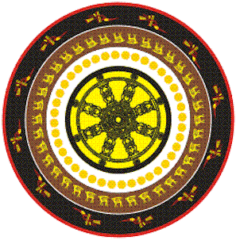

|
Đại Cương Lịch Sử Phật Giáo Thế
Giới
Andrew Skilton
(Dharmacari Sthiramati)
CHÚ THÍCH Các tham chiếu có một chữ cái hay một con số đi trước để chỉ về đoạn của tác phẩm được trích. Ví dụ, (D) Williams 1989 có nghĩa là đoạn tham khảo chỉ về tác phẩm của Williams xuất bản năm 1989 và được liệt kê trong phần chung (D). Các số ở vị trí này chỉ về các số chương trong tác phẩm. Các thuật ngữ chuyên môn thường được trích dẫn bằng tiếng Phạn thay vì tiếng Pāli, trừ khi được trích trực tiếp từ bản văn gốc Pāli. Tất cả các tham chiếu về Kinh điển Pāli đều dựa trên các ấn bản của Hội Văn Bản Pāli. Khi số tham chiếu nói về cả một kinh sutta, thì chỉ ghi số của kinh sutta đó. Khi tham chiếu nói về một đoạn trích trong một kinh, thì có ghi cả số quyển và số trang của bản văn Pli (theo lối thực hành quy ước). Trong những bản dịch tiếng Anh do Hội Văn Bản Pāli xuất bản, những số này thường được in ở đầu trang, phần lề phía trong. Các chữ tắt trong phần chú thích này:
LỜI NÓI ĐẦU [1 ] (18) Chappell 1980 và Nattier 19911- BỐI CẢNH ẤN ĐỘ CỔ ĐẠI [2 ] Renfrew 1990[3] Carrithers, tr. 2607 [4] DN. 1 và 2 2- ĐỨC PHẬT [5 ] Gombrich 1992[6] MN. 26 [7] MN. 4, 19 & 36 [8] DN. 16 [9] Sn. v.v. 405-24 [10] MN. 8 [11] MN. 36 [12] V.i. 1-5 và Nidanakatha, Rhys Davids, tr. 199ff. [13] MN. 67 [14] (D) Lamotte, 1988, tr. 19-20 và (1) Ling, 1973, tr. 100 [15] DN. ii. 156 3- LỜI DẠY CỦA ĐỨC PHẬT [16 ] MN. 26[17] V.i. 6.17 và SN. v. 420 [18] V.i. 6.36 [19] (D) Sangharakshita 1993, tr. 143ff. và (1) Gombrich, 1988, tr. 59 [20] AN. iii. 415 [21] SN. ii. 10 [22] R. Gombrich, Jordan Lecture, Seminar 1, tháng 11-1994 (sắp xuất bản) [23] Dh. 273-9 [24] V.i. 6.42 4- ĐƯỜNG DẪN TỚI GIÁC NGỘ [25 ] Sangharakshita 1989[26] MN. i. 351; i. 38; SN.v.115-21; AN. i. 193-6 [27] Xem Vajiranana, 1962, về một mô tả cổ điển của Theravađa về hai loại thiền này. 5- TĂNG GIÀ ĐẦU TIÊN [28 ] Dh.vv. 190-2[29] V.i. 4; J. i. 80-1 [30] V.i. 16-17 [31] V.i.11.1 [32] MN.128 [33] Gombrich 1991, tr. 35 [34] như trên, và (1) Gombrich, 1988, tr. 109 [35] Dutt 1962, tr. 67 [36] DN.ii. 49 [37] MN.iii. 9-10 [38] DN.ii. 154 [39] DN.ii. 73-80 [40] MN.56 [41] MN.ii. 8-9 [42] Sn.976-1149 [43] (17) Gombrich 1994 [44] V.x.1-6 [45] Sn.136; MN. ii. 147ff [46] DN.31 [47] V.vi.4; SN. x. 8 [48] (1)Gombrich, 1988, tr. 73-4, tóm lược MN. iii. 261 [49] AN.iv. 211 [50] Ud.v.6; V.v. 13.8 [51] Sn.1142-4 bản dịch Hare 6- CÁC ĐẠI HỘI [52 ] V.ii. 189ff[53] (8) Cousins 1990 [54] (D) Lamotte 1988, tr. 172 7- SỰ PHÁT TRIỂN CỦA TĂNG GIÀ [55 ] V.i. 27; và (B) Warren, tr. 393-401[56] V.ii. 1 [57] (B) Warren, tr. 405-10 [58] (D) Lamotte, 1988, tr. 499ff [59] Bareau 1962 và Schopen 1989 (JPTS) [60] Strong 1977 và 1979 [61] (8) Bechert 1982 [62] Huntington 1990 8- CÁC TRƯỜNG PHÁI PHẬT GIÁO [63 ] Bechert 1981[64] Frauwallner 1956 [65] (9) xem luật śaikṣya trong Vinaya Piṭaka, Prebish 1975 [66] DN. iii. 59f [67] (3/4) Brough 1980 [68] xem (D) Williams 1989, tr. 16ff [69] V.i. 6.8 [70] DN. ii. 102-18 [71] MN. i. 171 [72] Mv. i. 161-72 [73] DN. iii. 230 [74] (9) Kathāvatthu "Các Điểm Tranh Cãi', tr. 323f [75] Mv. i. 63-157 [76] Lokānuvartana Sūtra, Harrison 1982 [77] So sánh hai bản văn của kinh Mahagovinda Sūtra; DN. ii. 251-2 và Mv. iii. 224 [78] Thích Thiện Châu 1984 [79] AN. i. 22; và xem SN. iii. 25 [80] (7) Scott 1985 [81] Vấn đề tranh luận này chỉ có thể hiểu đầy đủ trong bối cảnh mà Chương 10 mô tả. [82] AK. 1136-48 [83] AK. 693 [84] Khantipalo 1970 [85] AK. 810-16 [86] AK. 211-12 9- TAM TẠNG [87 ] (D) Lamotte 1988, tr. 150[88] như trên [89] Frauwallner 1956, tr. 65 [90] SN. i. 190 [91] Frauwallner 1956, tr. 154 [92] xem Thích Minh Châu 1991 và (1) MacQuēn 1988 [93] (D) Lamotte 1988, tr. 143ff [94] Thích Minh Châu 1991 [95] Aṅguttara Nikāya, Thích Huyền Vi [96] DN. ii. 123 đối với bản văn Pāli, không đầy đủ bằng. [97] DN. 5 và 24 [98] Ud. v. 5 10- VI DIỆU PHÁP (ABHIDHARMA) [99 ] Gethin 1992 và Jaini 1959, tr. 40ff[100] DN. ii. 120 [101] DN. 33 [102] (8) Harrison 1982 [103] Sastri tr. 20 và 298 11- NGUỒN GỐC ĐẠI THỪA [104 ] Gombrich 1992[105] (12) Lancaster 1968 và (12) Rawlinson 1972 [106] (14) Kalupahana, 1991, tr. 24 [107] (D) Williams 1989, tr. 26ff [108] Schopen 1979 [109] (12) Asta., Conze 1973, tr. 87 [110] (D) Hardy, tr. 97 [111] (10) ví dụ Gethin 1992, tr. 165-6 [112] Harrison 1992; (12) Harrison 1978 [113] (D) Williams 1989, tr. 218 [114] (7) Schopen 1985 [115] Schopen 1985; (12) Asta., Conze 1973, tr. 105 và 116; Saddharma-puṇḍariika Sūtra, ch. 16 [116] (C) Chattopadhyaya, tr. 99 12- CÁC KINH ĐẠI THỪA [117 ] The Drama of Cosmic Enlightenment, Sangharakshita 1993[118] xem các chương 14, 15, và 16 [119] Ksitigarbha Sūtra of the Past Vows of Earth Store Bodhisattva, Heng Ching, 1974, một tác phẩm bình luận về kinh Heart Sūtra; Sangharakshita, 1993 và 1993, hai bình luận mới của phương Tây; (15) Abhisamayalankaraloka, Conze, 1954, một bình luận Yogācārin về kinh AṣṭasāhasrikāPrajñāpāramitā Sūtra. [120] Harrison 1978 [121] Siksasamuccaya, Bendall và Rouse, tr. 17 [122] Conze 1978 [123] Nattier 1992 [124] Asta., Conze 1973, tr. 139 [125] (14) Suhrllekha v.121, Lozang Jamspal và tác giả khác, tr. 66 [126] Bodhicaryāvatāra 5.98; Siksasamuccaya, Bendall và Rouse, tr. 263-4 [127] (D) Nakamura, tr. 194 [128] Pederson 1980 13- LÝ TƯỞNG SIÊU NHIÊN MỚI [129 ] Bodhicaryāvatāra, 3.22-27[130] Bodhicittavivarana v.2, (14) Lindner, 1987, tr. 187 [131] Xem Bodhicaryāvatāra, Crosby và Skilton, dẫn nhập vào các chương 2 và 3 [132] Trong chương 2 của Bodhicittotpada-Sūtra-śāstra (không có bản dịch). Bản văn tiếng Phạn trong 'Fa Fu T'I Ching Lun, Bodhicittotpada-Sūtra-śāstra of Vasubandhu', Bhadanta Santi Bhiksu, Visva-Bharati Annals 2 (1949), tr. 185-243 [133] Xem Bodhicaryāvatāra, Crosby và Skilton, dẫn nhập vào chương 8. [134] (12) Lamotte, ch. XLII [135] Mv. i. 76ff 14- TRƯỜNG PHÁI MADHYAMAKA [136 ] Mula-madhyamaka-karika, 24.18[137] Warder 1973 15- TRƯỜNG PHÁI YOGÀCÀRIN [138 ] Frauwallner 1951[139] (12) Asta., Conze 1973, tr. 150 [140] Sandhinirmocana Sūtra, Lamotte, tr. 207 [141] như trên, tr. 211 [142] Trisvabhāvanirdeśa vv. 27-30 [143] Sponberg 1983 [144] (21) Demiéville 1954 [145] (D) Williams 1989, tr. 179ff [146] Schopen 1990 [147] (C) I-tsing, Takakusu, tr. 167-85 16- HỌC THUYẾT TATHAGATAGARBHA [148 ] Nidanakatha, Rhys Davids, tr. 206-7; V.i. 5[149] (D) Williams 1989, tr. 96f [150] Nakamura trong (D) Kitagawa và Cummings 1989, tr. 235 [151] Trích dẫn trong (D) Williams 1989, tr. 97 [152] Wayman 1978 [153] (D) Williams 1989, tr. 101 [154] như trên, tr. 99-100 17- TANTRA VÀ PHẬT GIÁO MẬT TÔNG [155 ] (C) Dharmasvāmin, Roerich 1959[156] Katz 1980 [157] Xem bài giới thiệu của Kvaerne về Caryāgiti [158] Sanderson (sắp xuất bản) [159] nt [160] nt [161] Xem (13) Sadhanas 18- PHẬT GIÁO SUY TÀN Ở ẤN ĐỘ [162 ] (D) Warder, 1980, tr. 506[163] (C) Dharmasvāmin, Roerich, tr. 90ff [164] Ritti 1989 [165] Gombrich 1988, tr. 142 19- SRI LANKA [166 ] như trên[167] Bài tham luận không xuất bản của Lance Cousins, "Aspects of Esoteric Southern Buddhism", phần 2, March 1993, tr. 5 [168] Xem Holt 1991 [169] Bombrich 1988, tr. 168 20- ĐÔNG NAM Á [170 ] Burma: Stargardt 1990[171] Burma: Strong 1992 [172] Xem các tác phẩm của Bizot, đề mục "Tantric or Esoteric Theravada". 21- TRUNG Á VÀ KASHMIR [173 ] Thông tin riêng, Dr L. Newby, Oriental Institute, Oxford.[174] (28) Ball 1989, tr. 5 22- TRUNG QUỐC [175 ] Harrison 1993[176] Zurcher 1991 [177] Zurcher 1982 23- TRIỀU TIÊN 24- NHẬT BẢN 25- TÂY TẠNG [178 ] Samuel 1993[179] Hōkham 1991 [180] Ruegg 1963 và Wilson 1991 26- MÔNG CỔ 27- NÊPAL [181 ] Xem Gellner 1990 và 1992[182] Xem Mitra 1882 28- BA TƯ [183 ] Tóm lược từ Rhys Davids[184] Jahn 1956, tr. 121ff [185] Schopen 1982 [186] Gimaret 1969 [187] Melikian-Chirvani 1974, tr. 5tt [188] như trên, tr. 10ff [189] Ball 1989, tr. 1 [190] Tóm lược từ Ball 1989 [191] Barthold 1933, tr. 30 [192] Trích dẫn trong Ball 1989, tr. 4 [193] Bulliê 1976 [194] như trên, tr. 145 số 48 [195] Barthold 1933 [196] Jahn 1956, tr. 83 -----*----- PHỤ ĐÍNH Giải thích bánh xe Pháp  Bánh xe Pháp có 4 vòng, tính từ ngoài vào thì:
Vòng 2:
Vòng 3:
Vòng 4:
-ooOoo- |
Chân thành cám ơn Tỳ kheo Thiện Minh đã gửi tặng bản vi tính (Bình Anson, 05-2004)
[Trở về
trang Thư Mục]
last updated: 23-05-2004